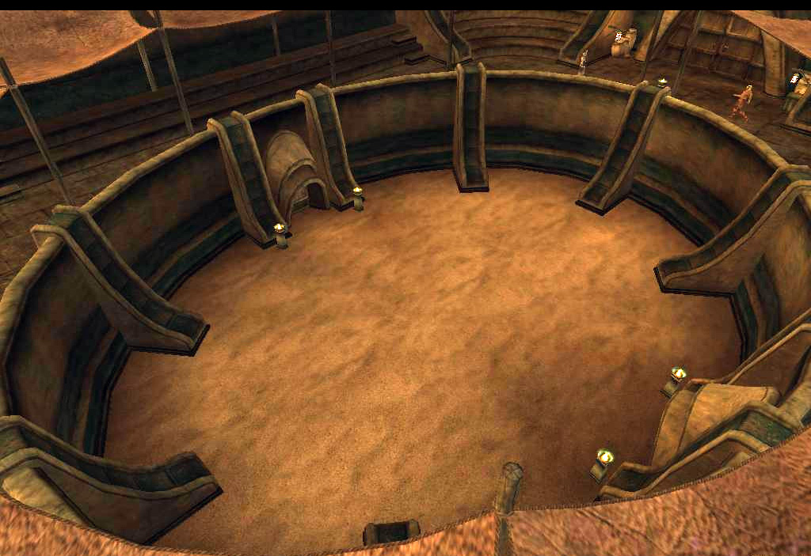
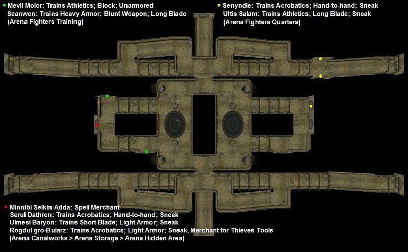

Morrowind:Arena Canton
Morrowind:Places:Vivec
 The Arena Canton |
|
 Above the arena pit |
|
Map of Vivec's Redoran canton |
The Arena lies between the Redoran Canton and the Telvanni Canton.
Comfortably domed with seats for hundreds of spectators, it is the site of
public entertainment and combat sports. The Arena is an ancient place where honorable duels are fought,
feuds are settled and matters of succession are decided. The Arena is the staging area for many quest-related duels.
In addition to the fighting pit itself, the Arena is home to the secret headquarters of the Morag Tong.
A variety of trainers are available in the Arena, including two master trainers: Senyndie for Acrobatics and Seanwen for Heavy Armor,
both in the Fighters Training area. You may also obtain the rare Frenzy Creature spell from Minnibi Selkin-Adda in the Morag Tong headquarters.
At the Waistworks
Arena Fighters Training area, Arena Holding Cells, Arena Fighters Quarters, and Arena Pit.
At the Canalworks
The Arena Canalworks has two separate sections. You can only get between them via the Underworks or Waistworks.
Storage room. Accessed from the Canalworks, western section. It contains a trapdoor leading to the Morag Tong headquarters, along with Taros Dral and Mephala's Quest.
The Underworks itself contains a lone Dreamer.
Getting Around
Arena connects to Redoran, Telvanni and St. Olms Canton through bridges. The Gondola at the northwest corner connects to Hlaalu, Foreign Quarter, Telvanni and Temple Canton.
Maps
Waistworks
|  Services in the Waistworks |